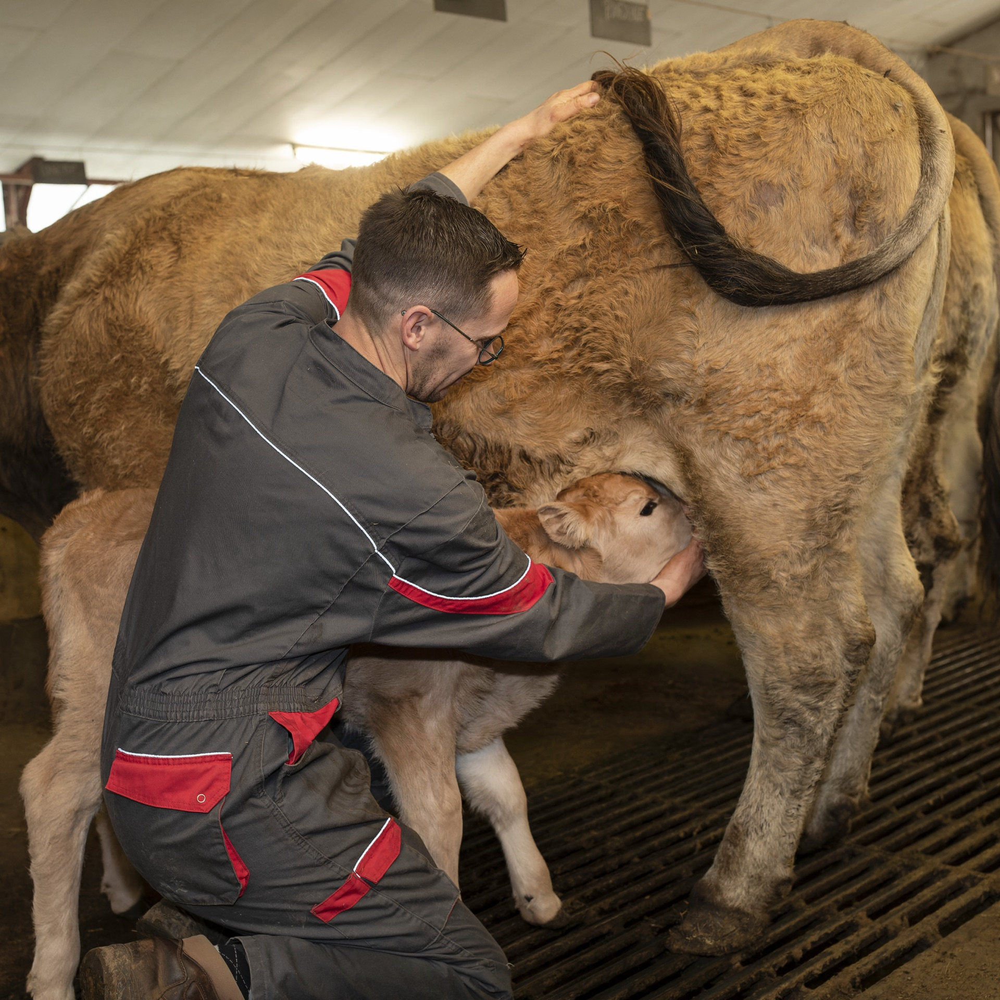

Charcuterie de Bœuf
Bœuf Aubrac
Bœuf Aubrac
race pure
Élaborée à partir de notre bœuf Aubrac élevé en race pure et nourri exclusivement au foin naturel, notre charcuterie bovine exprime toute la typicité de la race et du terroir cantalien.
- Saucisson de bœuf Aubrac — Sec, légèrement poivré, goût franc et intense
- Bœuf séché Aubrac — Séché à l'air du plateau, texture fondante et goût profond
- Terrines de bœuf — Recettes maison, généreuses et savoureuses
- Plats cuisinés — Mijotés au bœuf Aubrac, prêts à réchauffer